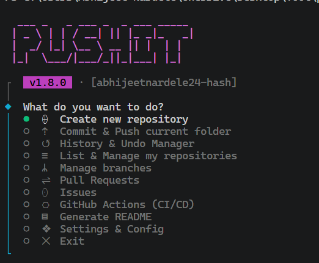

Terminal Infrastructure
for GitHub Workflows.
A centralized CLI environment that abstracts git commands and GitHub REST API interactions. Features interactive buffer staging, robust state management, and algorithmic commit generation.

"You'll probably deploy better code, simply because of the engineering rigor that pushit-cli enforces on your terminal."
"Our velocity is intense. AI-generated commits help us remain entirely action-biased."
The Engineering Bottleneck
Standard terminal workflows rely on fragmented execution. Developers repeatedly execute manual git add sequences, exposing environments to accidental `.env` leakage. Context-switching to a graphical browser to manage Pull Requests introduces latency to the deployment pipeline.
pushit-cli unifies the pipeline directly within the terminal buffer.
Core Capabilities
Engineered for high-velocity deployments.
Algorithmic Generation
Parses the abstract syntax tree of the git diff to automatically generate conventional commit messages, enforcing rigid structural standards across the repository.
Granular Buffer Staging
Exposes a multi-select buffer interface rendering the filesystem tree. Provides absolute precision over file staging and protects against catastrophic credential leaks.
State Management
Built-in architectural wrappers for soft resets and stash orchestration. Safely manipulate the Git DAG without data loss or working tree corruption.
Deploy with pushit-cli.
The framework is entirely open-source. Review the codebase and support the architecture on GitHub.
Review Source on GitHub